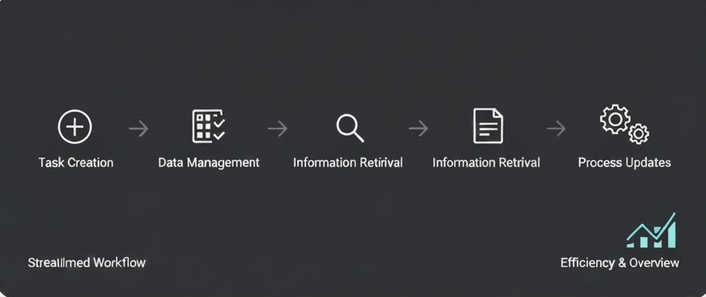

CRUDScope - HTML MediaPanel
Task administration panel, simulating CRUD operations.
Welcome to CRUDScope
Manage your tasks in a simple and clear way
What is CRUDScope?
- CRUDScope is a static interface designed to simulate a CRUD system.
- It represents how tasks are created, updated and deleted.
- The main goal is to help students understand system structure.
- Shows a clean visual representation of information flow.
- Helps learners connect UI design with CRUD logic.
CRUDScope focuses on clarity, structure, and real-world CRUD behavior.
What is it for?
CRUDScope helps students and beginners practice and understand the basic operations of a task management system. It visualizes how tasks are created, listed, updated, and removed, making it easier to grasp the workflow of CRUD applications. It also guides proper UI design.
- Clear visual representation of task management flow.
- Helps learners understand CRUD operations in practice.
- Encourages proper interface layout and design habits.
- Safe environment to experiment without affecting real data.
How it Works - CRUDScope
CRUDScope works as a system where each module can Create,
Read, Update, and Delete information. Everything is organized
so users can manage their data easily and efficiently.
How it works:
- Create: Add new records quickly through the interface.
- Read: CRUDScope displays all available information in a clean and structured way.
- Update: Modify any existing record without losing previous data.
- Delete: Remove unnecessary records safely.
Key Features
- Fast and intuitive interface
- Clean and organized data structure
- Modular system with independent sections
- Responsive design for all screen sizes
- Secure data handling
- Easy scalability for future features
- Consistent workflow with CRUD logic